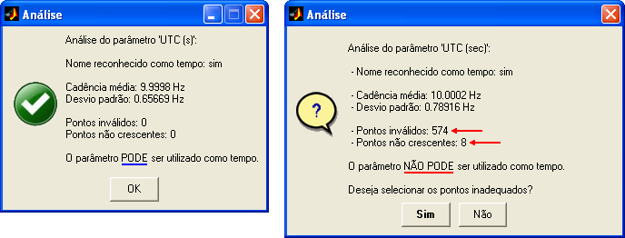
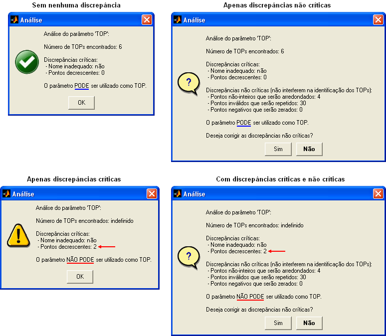

| Menu Dados |
|
Validade
de Y como Tempo
Essa função
analisa a adequabilidade do parâmetro
selecionado em y para ser usado como tempo nas operações referenciadas
no
tempo, como posicionamento de eventos e pontos de ensaio, integração e
diferenciação numérica, concatenação de dados, entre outras.
- Selecione em y o
parâmetro que deseja analisar.
- Clique no menu “Dados ► Análise de dados
... ► Validade de
y como tempo”.
O R_DAT irá
analisar todo o parâmetro selecionado em y e
procurar por características que inviabilizem seu uso como tempo de
referência.
Para que um
parâmetro de tempo seja considerado adequado, é
necessário cumprir os seguintes critérios:
- Ser monotônico
crescente, ou seja, não ter pontos repetidos nem decrescentes; e
- Não apresentar
nenhum ponto inválido (NaN).
O R_DAT
apresentará ao usuário o resultado da análise,
informando:
- Nome do parâmetro analisado;
- Se
o nome do parâmetro é reconhecido
como tempo (não relevante para a validade);
- Cadência média de
dados em Hz (descontinuidades são ignoradas);
-
Desvio padrão da cadência;
- Número de pontos
inválidos;
- Número de pontos
não crescentes; e
- Conclusão da
análise.

Para localizar
os pontos que tornam o parâmetro inadequado para uso
como tempo, pressione "Sim" ou use a função “Selecionar
pontos inadequados de tempo”.
Validade
de Y como TOP
Essa
função analisa a adequabilidade do parâmetro
selecionado em y para ser usado como TOP em operações como
conversão de TOP em eventos, definição de TOPs como limites de pontos
de ensaio, ir para TOP, entre outras.
- Selecione em y o
parâmetro que deseja analisar.
- Clique no menu “Dados ► Análise de dados
... ► Validade de
y como TOP”.
O
R_DAT irá
analisar todo o parâmetro selecionado em y e
procurar por características que inviabilizem seu uso como TOP
(discrepâncias críticas) e por características que, embora não
representem corretamente um parâmetro de TOP, podem ser ignoradas
(discrepâncias não críticas).
Para que um
parâmetro de TOP seja considerado adequado, é
necessário cumprir os seguintes critérios críticos:
- Possuir um nome adequado para ser reconhecido como TOP; e
- Não conter pontos decrescentes.
As seguintes discrepâncias são consideradas não críticas, e são lidadas pelo R_DAT da seguinte forma:
-
Valores não-inteiros são arredondados;
- Valores
negativos são zerados; e
- Pontos inválidos (NaN) são repetidos segundo o valor válido anterior.
O R_DAT
apresentará ao usuário os dados obtidos como resultado da análise e
indicará se o parâmetro pode ser usado como TOP:

Para localizar todas as discrepâncias do parâmetro TOP, use a função “Selecionar pontos inadequados de TOP”.
| |
Histograma
do intervalo |
Espectro de
potência |
|